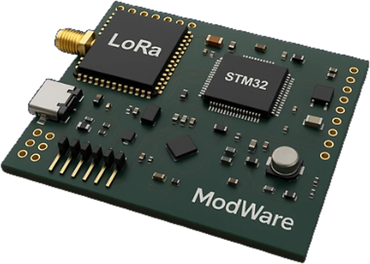

MW-SPARK · Geliştirme & Kontrol
MODWARE SPARK
Fikirden çalışan prototipe giden en kısa yol.
STM32 tabanlı kompakt geliştirme kartı. Haberleşme protokollerini denemek, yeni yazılımlar geliştirmek ve hızlı prototip çıkarmak için tasarlandı.